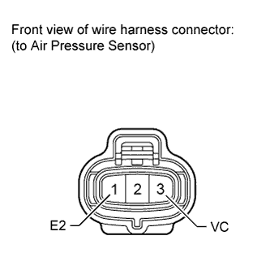
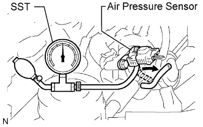
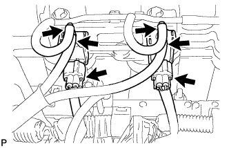
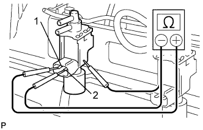
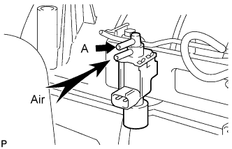
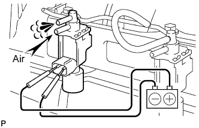
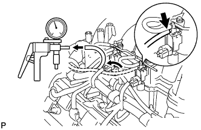
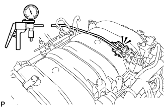
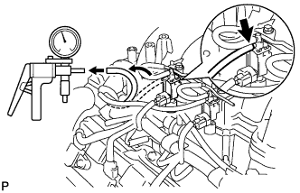
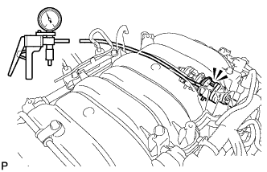

AIR SWITCHING VALVE (w/ Secondary Air Injection System) > ON-VEHICLE INSPECTION |
| 1. CHECK AIR PRESSURE SENSOR |
Remove the intake manifold (Click here).
Disconnect the air pressure sensor connector.
Turn the engine switch on (IG).
 |
Measure the voltage according to the value(s) in the table below.
| Tester Connection | Switch Condition | Specified Condition |
| 3 (VC) - 1 (E2) | Engine switch on (IG) | 4.5 to 5.5 V |
Turn the engine switch off.
 |
Connect the air pressure sensor connector.
Connect SST (turbocharger pressure gauge) to the air pressure sensor as shown in the illustration.
Connect the intelligent tester to the DLC3.
Turn the engine switch on (IG).
Turn the tester main switch on.
Enter the following menus: Powertrain / Engine and ECT / Data List / Air pump pressure (absolute).
Check that the pressure displayed on the intelligent tester fluctuates when applying pressure to the pressure sensor with the pressure gauge.
| 2. CHECK VACUUM CONTROL VALVE SET |
 |
Disconnect the 2 connectors.
Disconnect the 2 vacuum switching valve hoses and 2 vacuum hoses from the VSV.
 |
Measure the resistance according to the value(s) in the table below.
| Tester Connection | Condition | Specified Condition |
| 1 - 2 | 20°C (68°F) | 33 to 39 Ω |
| 1 - Body ground | Always | 1 MΩ or higher |
| 2 - Body ground | 1 MΩ or higher |
 |
Apply air to the port as shown in the illustration.
Check that air does not flow from port A.
If the result is not as specified, replace the VSV.
 |
Apply positive battery voltage to the terminals, apply air to the port, and check that air flows from the port shown in the illustration.
If the result is not as specified, replace the VSV.
Connect the 2 vacuum switching valve hoses and 2 vacuum hoses to the VSV.
Connect the 2 VSV connectors.
Perform the "Check Vacuum Switching Valve" procedures above on the other VSV.
| 3. CHECK NO. 1 AIR SWITCHING VALVE ASSEMBLY |
 |
Disconnect the vacuum switching valve hose from the VSV for the air injection system.
Apply vacuum of 60 kPa (450 mmHg, 17.7 in.Hg) to the vacuum switching valve hose, and check that the vacuum does not decrease.
If the operation is not as specified, replace the No. 1 air switching valve assembly.
 |
Release the vacuum, and check that the operation sound is emitted from the No. 1 air switching valve assembly.
If the operation is not as specified, replace the No. 1 air switching valve assembly.
| 4. CHECK NO. 2 AIR SWITCHING VALVE ASSEMBLY |
 |
Disconnect the vacuum switching valve hose from the VSV for the air injection system.
Apply vacuum of 60 kPa (450 mmHg, 17.7 in.Hg) to the vacuum switching valve hose, and check that the vacuum does not decrease.
If the operation is not as specified, replace the No. 2 air switching valve assembly.
 |
Release the vacuum, and check that the operation sound is emitted from the No. 2 air switching valve assembly.
If the operation is not as specified, replace the No. 2 air switching valve assembly.